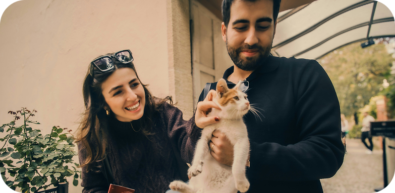

Adoptá a un amigo fiel
Elegir adoptar una mascota no se trata solo de darle la bienvenida a un animal en tu hogar.
Se trata de abrazar a un compañero que trae amor incondicional, mucha alegría y compañía a
tu vida. Cada adopción es un poderoso acto de compasión, que ofrece una segunda
oportunidad a un animal necesitado y al mismo tiempo enriquece tu propia vida con calidez,
compañía y amor.
Adoptar es mucho más que llevar un perro a casa:es salvar una viday
liberar un espacio en nuestro espacio para que otro amigo fiel pueda ser rescatado.
